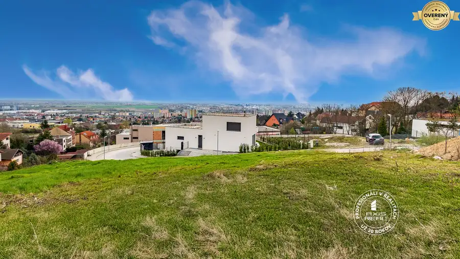
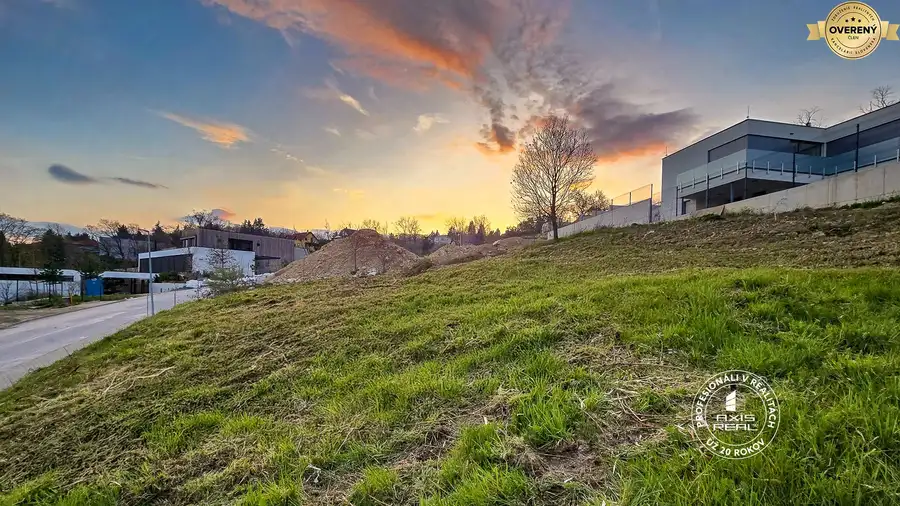
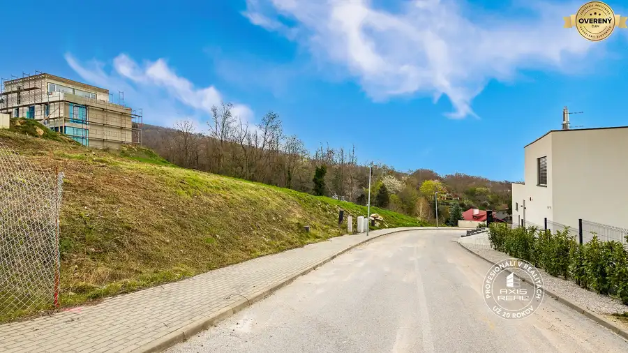
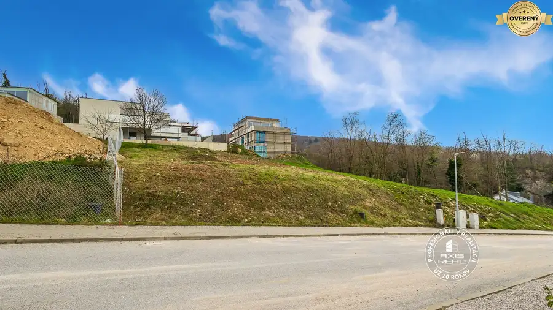
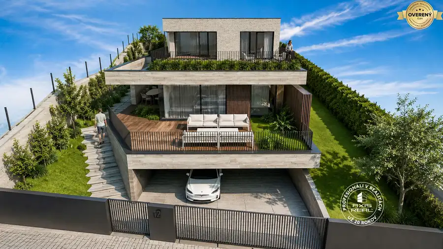

Pozemok (628 m2) so STAVEBNÝM POVOLENÍM, BA III. Rača
Rača, Bratislava





- Plocha628 m²
- Vlastníctvoosobné
O nehnuteľnosti
POPIS POZEMKU:
Realitná kancelária AXIS REAL ponúka na predaj atraktívny STAVEBNÝ POZEMOK so STAVEBNÝM POVOLENÍM o výmere 628 m² v krásnej a tichej lokalite Potočné, Bratislava III. Rača na ulici Pod Zemným vrchom. Tento svahovitý pozemok poskytuje panoramatické výhľady na Raču a okolitú prírodu, čo z neho robí ideálnu voľbu pre tých, ktorí hľadajú dokonalé spojenie mestskej infraštruktúry a pokojného bývania.
Všetky inžinierske siete (VODA, KANALIZÁCIA, ELEKTRINA, PLYN, OPTICKÉ PRIPOJENIE NA INTERNET) sú priamo na pozemku, čo znamená OKAMŽITÚ PRIPRAVENOSŤ NA VÝSTAVBU. Prístup k pozemku zabezpečuje nová súkromná asfaltová cesta so širokým chodníkom a zeleným pásom.
O údržbu lokality sa stará profesionálna správcovská spoločnosť, ktorá zabezpečuje letnú aj zimnú údržbu, osvetlenie a čistotu komunikácií. Každý vlastník pozemku zároveň vlastní aj spoluvlastnícky podiel na prevádzkovom majetku (pozemok pod sieťami, cestné teleso, chodníky a verejné osvetlenie).
Pozemok sa predáva spolu s právoplatným STAVEBNÝM POVOLENÍM na moderný 5-izbový rodinný dom s priestrannou dispozíciou. PROJEKT DOMU JE ZAHRNUTÝ V CENE!
Výhody:
❶ VŠETKY INŽINIERSKE SIETE priamo na pozemku
❷ PRÁVOPLATNÉ STAVEBNÉ POVOLENIE – možnosť okamžitej výstavby
❸ PROJEKT RODINNÉHO DOMU v cene
❹ POKOJNÁ LOKALITA v blízkosti prírody, ideálna pre rodiny
❺ VYNIKAJÚCA DOSTUPNOSŤ do centra Bratislavy
LOKALITA:
Lokalita Potočné v mestskej časti Bratislava III – Rača je perfektnou voľbou pre tých, ktorí si chcú užívať pokojné bývanie so všetkými výhodami mesta. Výborná dostupnosť MHD, blízkosť škôl, obchodov, zdravotných zariadení a reštaurácií robia z tejto lokality atraktívne miesto pre život.
Milovníci prírody ocenia okolitú zeleň, ideálnu na prechádzky, cykloturistiku a relax. Bezpečné a tiché prostredie je ako stvorené pre rodiny s deťmi, ale aj pre jednotlivcov, ktorí hľadajú miesto na oddych od ruchu mesta.
Ak snívate o bývaní v jedinečnej lokalite, ktorá kombinuje prírodu, komfort a dostupnosť, tento stavebný pozemok v Rači je presne pre vás!
Máte záujem o viac informácií alebo si chcete nehnuteľnosť pozrieť osobne? Kontaktujte ma a rád Vám zodpoviem všetky otázky a dohodnem termín obhliadky:
Ing. Ľuboš Sigl | |
/ STAVEBNÝ POZEMOK / PREDAJ / BRATISLAVA III. RAČA / POTOČNÉ / ULICA POD ZEMNÝM VRCHOM / VŠETKY INŽINIERSKE SIETE / STAVEBNÉ POVOLENIE / PROJEKT RODINNÉHO DOMU / TICHÁ LOKALITA / SKVELÁ DOSTUPNOSŤ / KOMPLETNÁ OBČIANSKA VYBAVENOSŤ /
© Text a fotografie sú autorským dielom a vlastníctvom realitnej kancelárie Axis real.
Parametre
- Rozloha pozemku
- 628 m²
- Vlastníctvo
- osobné
- Status
- aktívne
- Odvoz odpadu
- áno - separovaný
- Voda
- verejný vodovod
- El. napätie
- 230V
- Plyn
- áno
- Kanalizácia
- áno
- Internet
- optika
- Inžinierske siete
- áno
- Káblová televízia
- áno
- Orientácia
- južná
- Terén
- mierny svah
- Prístupová cesta
- asfaltová cesta
- Pripravené na výstavbu
- vydané stavebné povolenie
- Dátum zverejnenia
- 2026-07-20